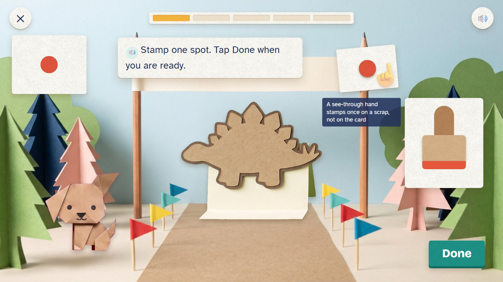
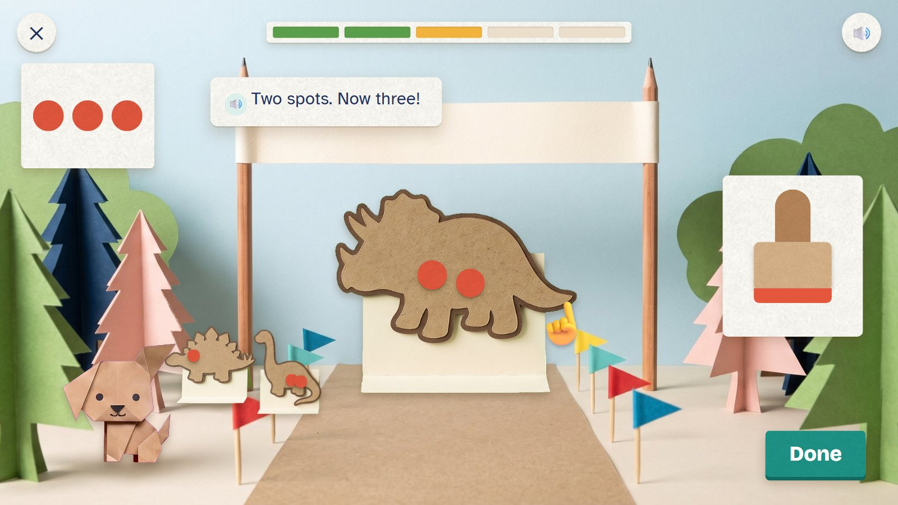
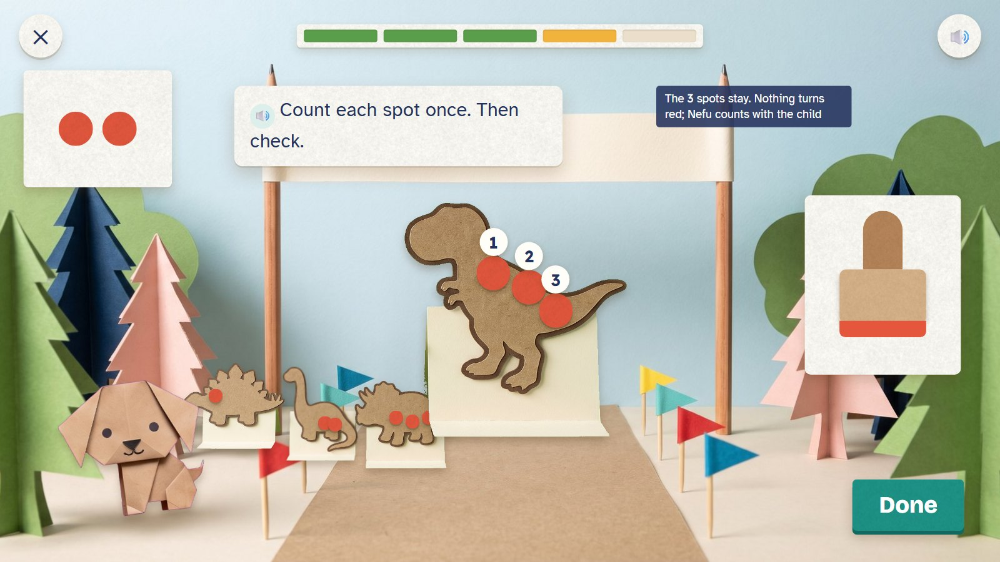
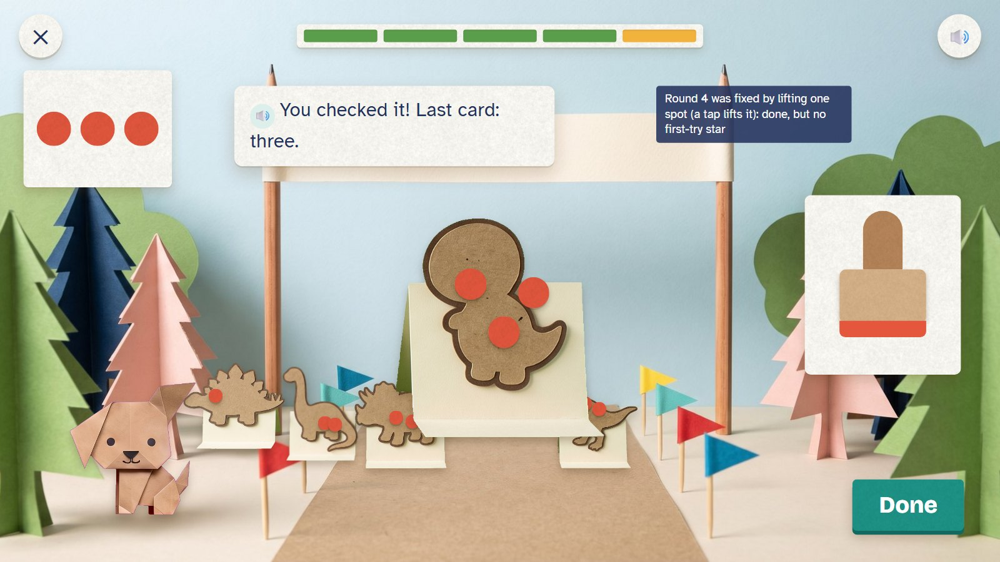
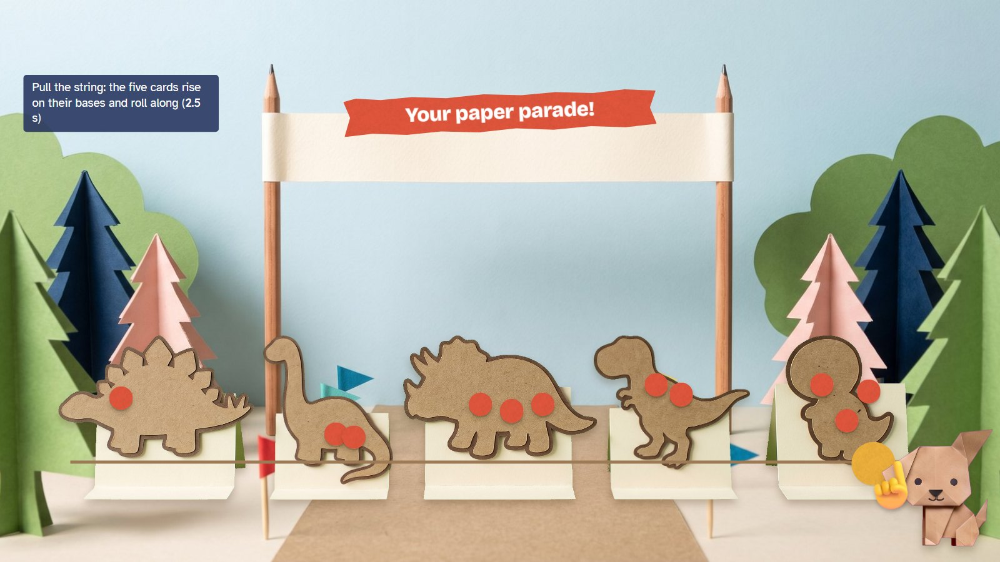

Dino Spots
Five plain paper dinosaurs are getting ready for a parade, and each one needs its spots. The child taps the stamp to put one spot at a time on the card and taps Done when the number is right. A spot comes off with a tap. Counting out a number, and knowing when to stop, is the first big counting skill.
Pre-K · ages 3–4 E01 Touch and count (counting out) paper move: stamp
Skill: Count out a number of things and stop: within 3, then 5, then 10. Host: Nefu the puppy. One activity is 5 rounds, about two minutes.
🎉 The fun
Stamping thumps; every card gets its own spots; the whole parade rolls off at the end.
🎥 The view
Fixed. The card, the order and the stamp stay together; finished cards line up on the road behind.
🎆 The finale
Pull the string: the five cards stand up on their folded bases and roll along the road (2.5 seconds).
Six moments

1The order
Nefu, a plain stegosaurus card and an order of one spot. A see-through hand stamps once on a scrap of paper, not on the card.
🔊 Stamp one spot. Tap Done when you are ready.
Done is always there. It never lights up at the right moment: deciding when to stop is the child's job.

2One spot
One tap, one spot. The child taps Done.
🔊 One spot. Ready!
Each tap adds exactly one spot; a fast double tap is never lost and never counted twice.

3The next cards
The first cards wait on the parade road. The triceratops gets its spots, one tap at a time.
🔊 Two spots. Now three!

4A wrong try
The order is two, but three spots are on the T-rex. They stay. Nefu counts them with the child: 1, 2, 3.
🔊 Count each spot once. Then check.
No red and no "wrong". The spots stay until the child lifts one.

5Fixed, and the last card
The child lifted one spot and pressed Done. The last card, the baby dinosaur, asks for three.
🔊 You checked it! Last card: three.
Fixed on the second try: the card is done, but there is no first-try star for it.

6The parade
Five cards on the road, each with its own spots. The child pulls the string.
🔊 Your paper parade!
Mock-ups: Gemini's paper pictures (scenes, friends, props) with the maths pieces drawn by code, as the app would draw them. In the app everything moves; here it stands still.
Exactly what is asked
| Round | Task |
|---|---|
| 1 | Stamp 1 spot |
| 2 | Stamp 2 spots |
| 3 | Stamp 3 spots |
| 4 | Stamp 2 spots |
| 5 | Stamp 3 spots |
This is one activity card. The skill's five steps (see it, fill one part, on your own, check it, word problem) are five different cards made from the same engine. Stars count first tries only: 5 of 5 = 3 stars, 4 = 2, 3 = 1.
Wrong answers we expect, and what happens
| Mistake | Looks like | What happens (never red, never "wrong") |
|---|---|---|
| Too many | stamping goes on past the number | the spots stay; Nefu counts them with the child; the child lifts one |
| Too few | Done is pressed early | "Is that all of them?" and Nefu counts with the child |
| Counted twice | one spot counted two times | when they count together, each spot gets its own number |
| The last number is not "how many" | counts 1, 2, 3 but says "two" | Nefu asks: "So how many spots?" |
What it needs
- The parade road, drawn once (Gemini)
- Five plain dinosaur cards with no faces (drawn)
- The stamp, the spots and Done, drawn by code
- Nefu in three poses: happy, thinking, cheering
- Voice: orders 1–10, counting 1–10, four tips, six kinds of praise
Test robot: Reads the order from the question (never from the screen's answer), stamps exactly that many spots and presses Done. Once an activity it stamps one too many, to check the tip.